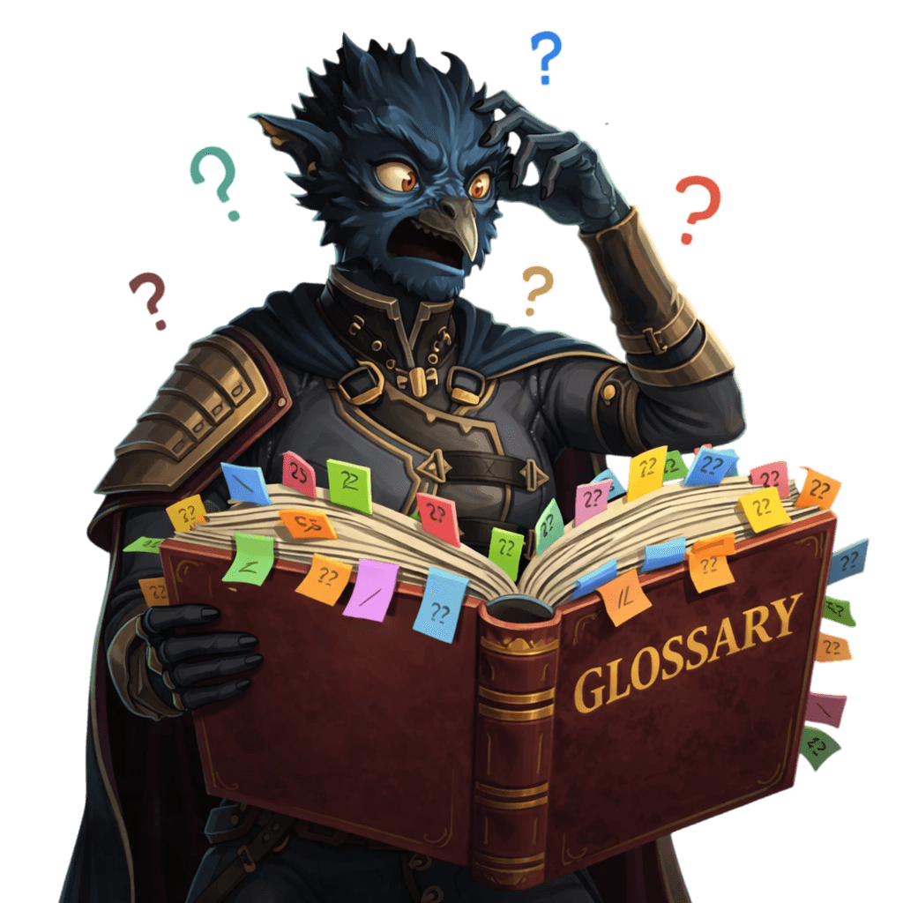

Glossary • terms and definitions
Crystalfall Glossary
Explore the complete Crystalfall glossary, featuring clear definitions of key game mechanics, stats, and terminology. This reference guide helps players understand essential concepts such as damage types, modifiers, skills, ailments, and progression systems.

Glossary
| Key | Description |
|---|